Tesis de maestría La Guajira, Colombia
Guardianes del Viento
Que la evidencia llegue primero.
Una cooperativa wayuu sin ánimo de lucro para producir, validar y gobernar la información ambiental y social alrededor de los parques eólicos de La Guajira.
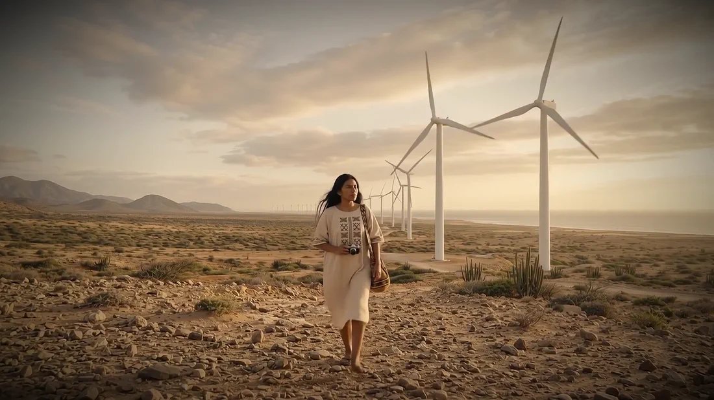
Hagamos que la evidencia llegue primero.
Previsualización del storyboard · el video final ocupará este lugar
El proyecto en cifras
Un piloto verificable antes que una promesa.
Guardianes del Viento busca reducir la incertidumbre que alimenta la desconfianza y las controversias, y dejar capacidad técnica, empleo y reinversión en el territorio.
-
cerca del
98 %
de los proyectos eólicos del país se concentran en La Guajira.
Referencia del proyecto: UPME, 2026
-
piloto
COP 650 M
de inversión estimada para un piloto verificable.
Supuesto de planeación
-
cobertura inicial
2 parques
y 12 personas wayuu como monitores para probar la solución.
Alcance del piloto
-
meta 2030
24 personas
wayuu certificadas para cubrir cuatro parques.
Meta de impacto
-
meta 2030
−50 %
en el tiempo de verificación.
Meta de resultado
-
meta 2030
−30 %
en los días de paralización vinculados a controversias de información.
Meta de resultado
Las cifras corresponden a metas y supuestos de planeación que deberán validarse durante el piloto. No representan resultados ya alcanzados.
01 El riesgo que da origen al proyecto
Cuando la evidencia no es compartida, cada actor decide desde una versión diferente del territorio.
La Guajira concentra una parte determinante del desarrollo eólico colombiano, pero los proyectos se despliegan en un territorio donde persisten brechas sociales, institucionales y de confianza.
Cuando comunidad, empresa y Estado reciben versiones distintas sobre impactos, compromisos o mediciones, la información deja de orientar la decisión y se convierte en un nuevo foco de conflicto.
El Global Risks Report 2025 mantiene la información falsa y la desinformación entre los riesgos de mayor preocupación en el corto plazo, mientras los riesgos ambientales dominan el horizonte de largo plazo. En La Guajira estos riesgos se superponen: las decisiones sobre agua, biodiversidad, uso del suelo, relacionamiento comunitario y operación de los proyectos requieren datos oportunos, comprensibles y reconocidos por las partes.
El problema no se limita a que circule información falsa. También aparece cuando los datos llegan tarde, no pueden verificarse, se presentan en formatos inaccesibles o provienen de una fuente que alguna de las partes no considera legítima. En ese contexto, incluso una medición técnicamente correcta puede no generar confianza.
Tres versiones del mismo territorio
Sin evidencia compartida crecen la desconfianza, el conflicto y las paralizaciones.
Lo que ocurre cuando falta evidencia compartida
- DesconfianzaLas mediciones, los compromisos y las respuestas son cuestionados.
- Reacción tardíaUna alerta ambiental o social se atiende después de que la tensión ha aumentado.
- DuplicidadCada parte encarga su propia verificación y los resultados pueden no coincidir.
- ParalizaciónLas controversias informativas contribuyen a retrasos, mayores costos y deterioro reputacional.
- Pérdida de legitimidadLas decisiones se perciben como externas o desconectadas del conocimiento territorial.
La oportunidad en La Guajira
67,4 %de pobreza monetaria en el departamento en 2021.
2023Windpeshi, suspendido de forma indefinida.
Los antecedentes de proyectos detenidos muestran que construir infraestructura no garantiza por sí solo la viabilidad territorial. El caso de Windpeshi muestra que los costos de la transición energética no dependen únicamente de la ingeniería o del precio de la energía: también intervienen la confianza, la calidad del relacionamiento, la distribución de beneficios y la capacidad para resolver diferencias antes de que afecten la operación.
Guardianes del Viento plantea que producir información confiable y gobernada desde el territorio puede convertirse en un servicio. Los proyectos eólicos necesitan reducir incertidumbre, atender alertas y demostrar cumplimiento; las comunidades necesitan capacidad para observar, interpretar y decidir sobre la información que se produce en su territorio.
La pregunta de giro
¿Y si la evidencia naciera en el territorio?
¿Y si ella, junto con su comunidad, pudiera producir y gobernar esa evidencia?
Recreación visual · no representa una persona o un hecho real
02 La solución propuesta
Una cooperativa wayuu que observa, mide, valida, comunica y gobierna la información.
Guardianes del Viento sería una cooperativa wayuu sin ánimo de lucro que presta servicios de monitoreo ambiental y social a proyectos eólicos. Su actividad no consiste únicamente en recopilar datos: integra cinco funciones que deben operar juntas.
Observar
Lectura territorial, recorridos, identificación de cambios y registro de percepción comunitaria.
Medir
Sensores de bajo costo, muestras, información satelital y drones únicamente en zonas autorizadas.
Validar
Calibración, contraste de muestras y auditoría independiente de la cadena de custodia.
Comunicar
Alertas, reportes y tableros bilingües que expliquen qué ocurrió, dónde y qué respuesta se produjo.
Gobernar
Reglas comunitarias sobre acceso, sensibilidad, publicación, corrección y uso de los datos.
Dos necesidades, un mismo servicio
La cooperativa articula lo que necesitan los proyectos y lo que necesitan las comunidades, sin entregar el control de la evidencia a quien financia el servicio.
- Evidencia temprana
- Monitoreo periódico y alertas con cadena de custodia.
- Credibilidad técnica
- Calibración y validación por universidad o laboratorio.
- Legitimidad territorial
- Participación wayuu y gobernanza comunitaria de los datos.
- Comprensión
- Tableros y comunicación en wayuunaiki y español.
- Continuidad
- Contratos recurrentes y reinversión de excedentes.
02.1 Cómo funciona el servicio
El servicio inicia antes de instalar sensores.
Cada parque participante debe acordar con las autoridades wayuu los puntos de observación, los protocolos, los datos sensibles y el procedimiento para atender alertas. Después se levanta una línea base que permita comparar los cambios y atribuir con mayor prudencia los resultados del piloto.
-
1
Preparación
Consentimiento, gobernanza, seguridad, selección de monitores y puntos.
Resultado verificableAcuerdos y protocolos aprobados.
-
2
Formación
Uso de equipos, cadena de custodia, seguridad y comunicación.
Resultado verificablePersonas certificadas y pruebas de competencia.
-
3
Medición
Registros ambientales y sociales con controles de calidad.
Resultado verificableDatos trazables y comparables.
-
4
Validación
Calibración, contraste de muestras y auditoría por muestreo.
Resultado verificableMediciones reconocidas como utilizables.
-
5
Alerta
Clasificación, comunicación y asignación de responsable.
Resultado verificableEvento reportado con hora, ubicación y evidencia.
-
6
Respuesta
Acción del parque o autoridad y seguimiento al cierre.
Resultado verificableRespuesta documentada dentro del plazo.
-
7
Aprendizaje
Revisión de indicadores y decisiones de adaptación.
Resultado verificableContinuar, corregir, ampliar o detener.
El parque no compra un resultado favorable ni controla lo que se publica. Contrata una capacidad independiente de monitoreo, verificación y respuesta.
03 Innovación y tecnología
La innovación no está en un sensor. Está en la arquitectura.
Herramientas digitales, conocimiento wayuu, validación externa y reglas de gobernanza dentro de un mismo servicio. Esa arquitectura cambia quién produce la evidencia, quién puede revisarla y cómo se convierte en una decisión.
-
Sensores de bajo costo
Seguimiento frecuente de variables ambientales.
Límite de diseño. Requieren calibración, mantenimiento y contraste.
-
Información satelital
Identificación de cambios y comparación temporal.
Límite de diseño. No sustituye la observación de campo.
-
Inteligencia artificial
Detección de patrones y priorización de alertas.
Límite de diseño. No decide la validez cultural ni reemplaza el juicio humano.
-
Drones
Registro en áreas extensas o de acceso complejo.
Límite de diseño. Solo en zonas autorizadas y con protocolo de privacidad.
-
Trazabilidad digital
Registro de origen, cambios, accesos y respuesta.
Límite de diseño. La transparencia no implica publicar datos sensibles.
-
Tableros bilingües
Comunicación comprensible para actores distintos.
Límite de diseño. Deben probarse con usuarios y conectividad local.
La adopción tecnológica será gradual. El piloto debe privilegiar herramientas mantenibles en el territorio, reducir la dependencia de proveedores y formar a las personas que operarán el sistema después de la fase inicial.
04 Teoría de cambio
Datos legítimos activan alertas. Las alertas aceleran respuestas. Mejores decisiones reducen controversias.
La hipótesis es sencilla: si la información se genera con participación comunitaria, protocolos técnicos y validación independiente, aumentará la probabilidad de que comunidad, empresa y autoridad la reconozcan como utilizable. Esa aceptación permite actuar antes y decidir con menor incertidumbre.
- Entradas
Fondo piloto, consentimiento, equipos, personas formadoras, universidad y parques participantes.
- Actividades
Formar, medir, validar, alertar, responder, comunicar y auditar.
- Productos
Monitores certificados, registros trazables, alertas, respuestas y tableros.
- Resultados
Mayor aceptación de los datos, reducción del tiempo de verificación y respuestas más oportunas.
- Impacto
Menor incidencia de controversias informativas, capacidad territorial y una transición energética más confiable.
04.1 Por qué fue seleccionada esta idea
Tres alternativas, un mismo escenario y una decisión que resiste el cambio de pesos.
El escenario de transición energética en La Guajira dio origen a tres alternativas complementarias. La comparación se apoyó en la teoría de la utilidad multiatributo: innovación y viabilidad recibieron 35 % cada una, porque una solución diferente solo crea valor si puede implementarse; la sostenibilidad integral recibió 30 %.
Calificación de las tres alternativas
Utilidad multiatributo · escenario base (35 % innovación, 35 % viabilidad, 30 % sostenibilidad)
Las barras parten de cero. Calificaciones del análisis de selección del proyecto.
Comprobación de la decisión
Análisis de sensibilidad: cambie el énfasis y vea la calificación de Guardianes.
- Innovación
- 35 %
- Viabilidad
- 35 %
- Sostenibilidad
- 30 %
Guardianes4,48
Guardianes conservó el primer lugar en los cuatro escenarios: la selección no depende de una sola distribución de pesos, sino del desempeño equilibrado de la propuesta.
| Escenario | Innovación | Viabilidad | Sostenibilidad | Guardianes |
|---|---|---|---|---|
| Base | 35 % | 35 % | 30 % | 4,48 |
| Énfasis en innovación | 60 % | 20 % | 20 % | 4,56 |
| Énfasis en viabilidad | 20 % | 60 % | 20 % | 4,34 |
| Énfasis en sostenibilidad | 20 % | 20 % | 60 % | 4,56 |
05 Resultados e impacto hacia 2030
El impacto se mide con metas concretas y con la evidencia que las respalda.
- PeopleParticipación y capacidades.
- PlanetAlertas y protección ambiental.
- ProsperitySostenibilidad financiera y valor retenido en el territorio.
- PlaceUso de evidencia para las decisiones territoriales.
| Indicador | Meta | Evidencia |
|---|---|---|
| Personas wayuu certificadas | 24 personas para cubrir cuatro parques; 50 % mujeres y 30 % jóvenes. | Registros de formación y certificación. |
| Mediciones críticas utilizables | 80 % reconocidas por comunidad, empresa y autoridad. | Actas de validación y encuestas separadas. |
| Tiempo de verificación | −30 % al finalizar el piloto y −50 % en 2030. | Hora de reporte, validación y respuesta. |
| Alertas atendidas | 80 % respondidas y documentadas en 72 horas. | Bitácora de alertas y cierres. |
| Días de paralización | −15 % en 2028 y −30 % en 2030 por controversias de información. | Cronogramas, actas y clasificación independiente. |
| Cobertura de costos recurrentes | 70 % mediante contratos en 2030. | Contratos y estados financieros. |
| Gasto retenido en el territorio | 60 % del gasto operativo en 2030. | Nómina, compras y auditoría. |
| Reinversión | 100 % de excedentes; mínimo 10 % en protección o restauración ambiental. | Estados financieros y actas de asamblea. |
Objetivos de Desarrollo Sostenible con los que se relaciona
- 6Agua limpia y saneamiento
- 9Industria, innovación e infraestructura
- 13Acción por el clima
- 16Paz, justicia e instituciones sólidas
06 Modelo de negocio y clientes
Un servicio recurrente, con cláusulas de independencia.
La cooperativa presta un servicio recurrente a desarrolladores y operadores eólicos, mediante contratos de monitoreo, validación y reporte por parque. Puede complementarse con cooperación o capital semilla en la fase inicial, pero su sostenibilidad debe depender progresivamente de ingresos por servicio.
-
Parques eólicos
NecesidadReducir incertidumbre y responder a alertas.
Valor que recibeInformación temprana, trazable y con legitimidad territorial.
-
Aseguradoras y financiadores
NecesidadComprender riesgos ambientales, sociales y de continuidad.
Valor que recibeIndicadores verificables y seguimiento de compromisos.
-
Autoridades ambientales
NecesidadFortalecer seguimiento y capacidad de respuesta.
Valor que recibeEvidencia complementaria con cadena de custodia.
-
Comunidades wayuu
NecesidadParticipar y conservar control sobre información sensible.
Valor que recibeCapacidad técnica, empleo, gobernanza y reinversión.
-
Cooperación y fondos públicos
NecesidadFinanciar soluciones con impacto medible.
Valor que recibeHitos, auditoría y resultados vinculados al territorio.
-
Precio de referencia
COP 25 Mmensuales por parque
Supuesto de planeación para un servicio integral: personal, operación de campo, mantenimiento, conectividad, plataforma, validación y administración. No corresponde al precio de un sensor ni al punto de equilibrio, y deberá validarse antes de contratar.
06.1 Piloto y criterios de validación
Diseñado para reducir incertidumbre antes de escalar.
Iniciaría en dos parques con condiciones contrastantes y 12 personas wayuu como monitores. Durante los primeros meses se levanta la línea base y se prueban los protocolos; luego se evalúa si la evidencia es aceptada, utilizada y financieramente sostenible.
- Cobertura
- Dos parques y sus áreas de influencia acordadas.
- Equipo comunitario
- 12 personas wayuu, seis por parque, con metas de participación de mujeres y jóvenes.
- Variables
- Indicadores ambientales y sociales definidos con comunidad, parques y validador.
- Validación
- Universidad o laboratorio con calibración, contraste y auditoría por muestreo.
- Respuesta
- Alertas asignadas y documentadas; meta de 80 % atendidas dentro de 72 horas.
- Evaluación
- Comparación con línea base y decisión de continuar, adaptar, ampliar o detener.
Umbrales para continuar
- Los monitores pueden trabajar sin amenazas no controladas y existe una ruta de protección activa.
- La calidad técnica cumple los protocolos y las mediciones críticas son aceptadas como utilizables.
- Las alertas generan respuestas documentadas y la información se utiliza en decisiones reales.
- Los clientes reconocen valor suficiente para avanzar hacia contratos que cubran costos recurrentes.
- La gobernanza comunitaria funciona sin captura, exclusión o interferencia del financiador.
07 Gobernanza y alianzas
La confianza depende de una distribución clara de responsabilidades.
Las decisiones sobre datos sensibles corresponden a la gobernanza comunitaria; la calidad técnica, a la universidad o laboratorio; los parques deben responder a las alertas; el financiador administra recursos y verifica hitos, pero no modifica mediciones ni veta resultados válidos.
- El parquefinancia y responde
- La cooperativamide
- La universidad o el laboratoriovalida
- La comunidadgobierna los datos sensibles
- El financiadorverifica hitos, sin veto
07.1 Riesgos y mecanismos de control
Mitigar la desinformación no elimina la desconfianza: los riesgos de operar se vigilan desde el diseño.
| Riesgo crítico | Control propuesto | Condición de decisión |
|---|---|---|
| Captura por un clan o grupo | Representación, conflictos de interés y mayoría calificada. | Adaptar o suspender si persiste la exclusión. |
| Amenazas a monitores | Ruta confidencial, Defensoría y suspensión preventiva. | No continuar sin protección efectiva. |
| Uso indebido de datos | Clasificación, permisos, auditoría de accesos y soberanía comunitaria. | Investigar, contener y revisar autorizaciones. |
| Baja calidad técnica | Calibración, cadena de custodia y validación independiente. | No publicar como evidencia válida. |
| Interferencia del financiador | Cláusulas de independencia y ausencia de veto. | Activar revisión externa o terminar el contrato. |
| Dependencia financiera | Fondo inicial, contratos escalonados y diversificación. | No escalar sin ruta de cobertura de costos. |
| Baja adopción de la evidencia | Diseño conjunto, comunicación bilingüe y encuestas separadas. | Adaptar formatos y protocolos. |
| Cambio político o regulatorio | Alineación institucional y documentación de cumplimiento. | Actualizar alcance sin debilitar la gobernanza. |
La seguridad de los monitores es una condición de continuidad, no un indicador compensable.
08 Inversión requerida y uso de recursos
COP 650 millones para una capacidad de monitoreo distribuida.
El valor no corresponde a construir infraestructura eólica ni hídrica: financia equipos, plataforma, formación, gobernanza, validación e implementación territorial. El presupuesto debe detallarse con cotizaciones antes del cierre financiero.
Uso de los recursos del piloto
COP millones · piloto en dos parques con 12 personas wayuu
Total650
Estructura sugerida de financiación
El piloto puede combinar aportes de los parques, capital semilla público o de cooperación y recursos administrados por un fiduciario. El financiador obtiene visibilidad sobre el uso de los recursos, pero no control sobre la validez de los resultados.
Desembolsos condicionados a hitos verificables
- Aprobación de la gobernanza
- Formación
- Instalación
- Calidad de datos
- Respuesta a alertas
- Evaluación del piloto
08.1 Lectura financiera y sostenibilidad
Una ruta potencial de sostenibilidad, si se validan el precio, la adopción y los costos.
Los ingresos se estiman como tarifa por parque multiplicada por el número de contratos, con una tarifa de referencia de COP 25 millones mensuales por parque.
-
Conservador
- Ingresos acumulados a cinco años
- COP 10.200 M
- VPN al 15 %
- COP 53 M
- Recuperación
- Año 5
-
Base
- Ingresos acumulados a cinco años
- COP 17.100 M
- VPN al 15 %
- COP 3.260 M
- Recuperación
- Año 3
-
Expansivo
- Ingresos acumulados a cinco años
- Mayor adopción que el caso base
- VPN al 15 %
- Superior al caso base
- Recuperación
- Antes del año 3
Contratos por año en la proyección base
Número de parques con contrato · trayectoria comercial supuesta
- 2Año 1
- 5Año 2
- 10Año 3
- 16Año 4
- 24Año 5
Esta trayectoria comercial es un supuesto y no debe confundirse con la meta de impacto de 24 personas en cuatro parques.
El resultado conservador es relevante porque conserva un VPN positivo, aunque con margen reducido. Esto no garantiza el retorno: indica que existe una ruta potencial de sostenibilidad si se validan el precio, la adopción, los costos de campo y la continuidad contractual.
09 El territorio
El lugar donde la transición energética se vuelve cotidiana.
Registro fotográfico de campo en La Guajira: los parques eólicos y la vida que transcurre a su alrededor. A diferencia de las recreaciones del tráiler, estas imágenes son fotografías reales.
-
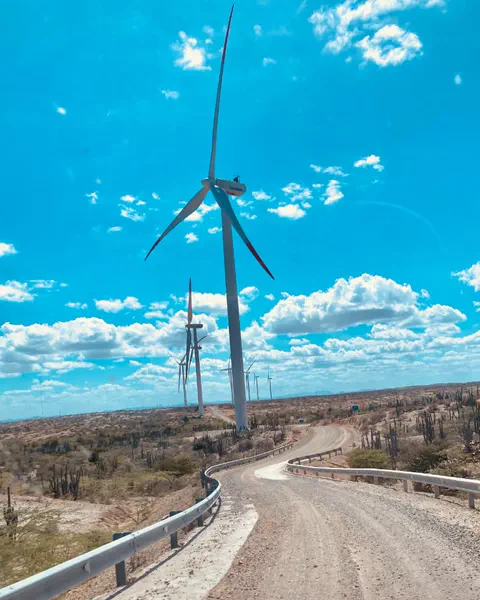
-
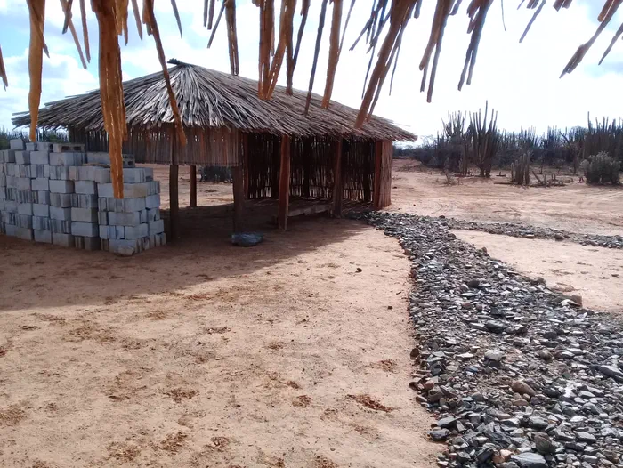
-
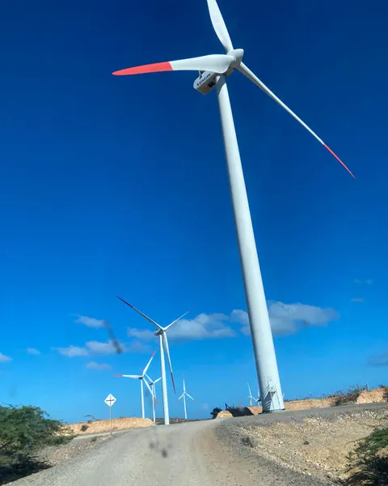
-
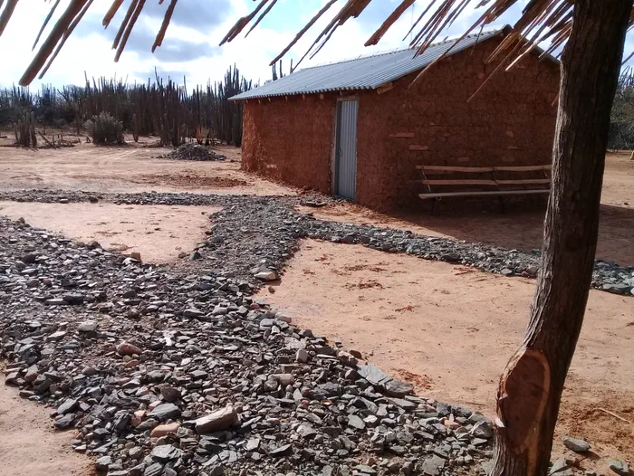
-
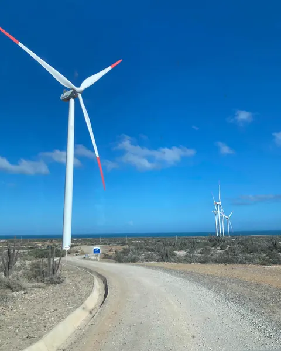
-
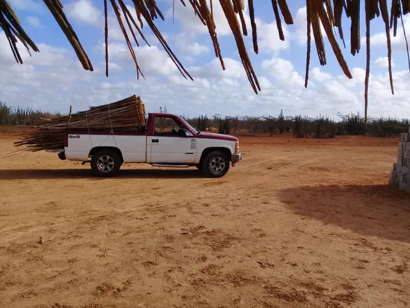
-
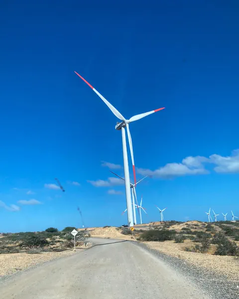
-
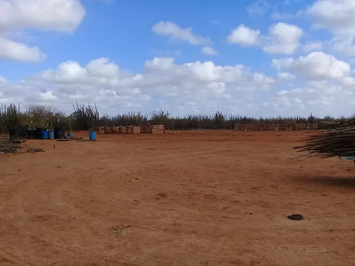
-
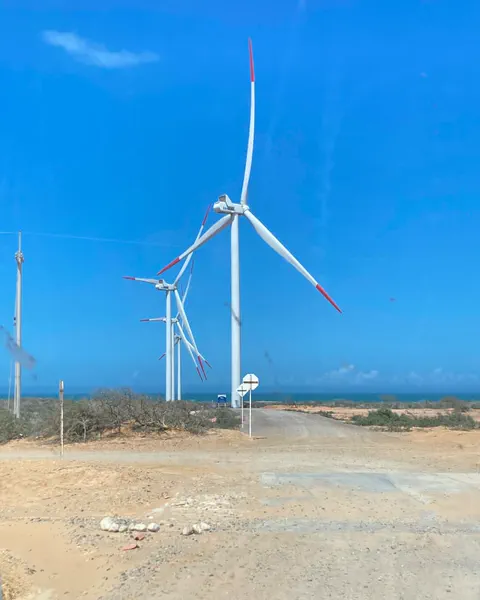
-
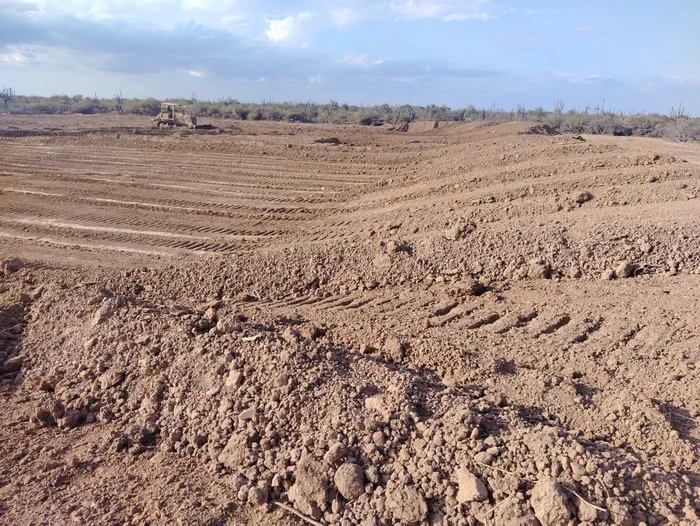


Fotografías de campo tomadas en La Guajira. Las imágenes marcadas como «Recreación visual» en el resto de la página fueron generadas específicamente para este proyecto y no representan personas o hechos reales.
10 Preguntas técnicas
Pregúntele a Alisio.
Alisio es el asistente del proyecto. Lleva el nombre de los vientos constantes del nordeste que mueven los parques de La Guajira y responde con la información del informe. Guarda las veinte preguntas técnicas del proyecto, con su respuesta completa, en cuatro bloques: fundamento, solución técnica y datos, inversión y sostenibilidad, y riesgos e impacto.
Sin inteligencia artificial generativa: cada respuesta sale del informe del proyecto, del guion del tráiler y de su documento de preguntas técnicas.
Para empezar
La propuesta al inversionista
Invierta en Guardianes del Viento. Hagamos que la evidencia llegue primero.
Se propone invertir COP 650 millones en un piloto con gobierno comunitario, validación independiente y desembolsos por hitos. La iniciativa puede reducir la exposición a retrasos y controversias, mejorar la trazabilidad de decisiones ESG y demostrar una forma de transición energética que deja capacidades en el territorio.
La expansión debe seguir la evidencia y no precederla.
Recreación visual · no representa personas o hechos reales